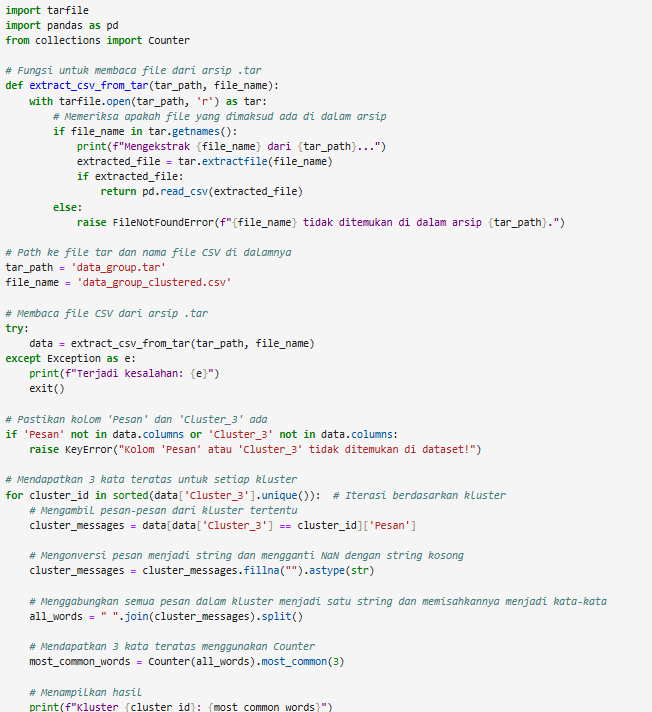

Laporan
Athaya Fajar Syailendra
L200220216
IPSD-C
Analisis Konten Group Whatsapp
1.Export konten beberapa group Whatsapp Anda menjadi sebuah file teks
2. Merubah file teks (.txt) menjadi file (.csv), kemudian compress sebagai file TAR
3. Melakukan pembersihan data dengan hanya mengambil angka, huruf, dan tanda baca umum
disini saya melakukan pembersihan menggunakan program tersebut untuk menghapus karakter yang tidak diinginkan, seperti simbol atau karakter khusus dan hanya mempertahankan huruf, angka, dan tanda baca umum
4. Melakukan scale data untuk preprocessing untuk analisis selanjutnya
5. Melakukan Clustering menggunakan algoritma kMeans
6. Tampilkan hasil Clustering